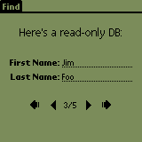
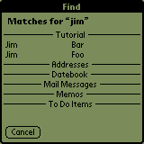

Objective Objective
To add the "find" feature to your app, which means it'll
be able to search and display its own data when the user taps the
"Find" button on the silkscreen to launch a global search.
 Concepts Concepts
Find? Okay... But... Find WHAT?
Palm OS provides the user with a very convenient feature: the capability
to search for a textual pattern throughout ALL the applications
that are installed on the device.
Search? Alrite... But HOW to search?
You like asking relevant questions don't you? As this "find"
thing is an OS feature, there's a pretty well-defined process to
implement it into your app:
- user taps Find button on silkscreen
- Palm OS launches each installed app (one after another) with
sysAppLaunchCmdSaveData launch code
- Apps that are "find-enabled" have the opportunity
to commit any pending change. Other
apps will probably ignore this launch
- Palm OS relaunches each app with sysAppLaunchCmdFind
launch code and a GoToParamsPtr in
the parameters block
- Apps that have this "find" feature will look up their
own database, streams, preferences... More generally: any
datasource that makes sense to scan
- Such an app will use FindDrawHeader() to display its title into
the results dialog
- The app will then loop thru its records
- For each match detected by TxtFindString(),
the app will call FindSaveMatch(), FindGetLineBounds() to know
where to display the match on results
dialog and do a WinDrawTruncChars() to actually
display the match...
- When the search is running, when it's done or when the display
dialog is full, the user may tap a specific
match that appears on the results dialog
- If the user tapped, Palm launches the appropriate app with a
sysAppLaunchCmdGoTo launch code.
It's up to this app to show the record
that generated the match
- Phew!!!!
 Exercise Exercise
Download the ZIP file.
In find.h:
- there ain't nothin' to do!
In find.rcp:
- add a LABEL for "Last Name"
- add a FIELD for "last Name"
- add the MENUITEM of each missing buddy in the menu
- make sure our app goes to category named "Tutorial"
upon installation
In find.c:
- in SaveData(), add PrefSetAppPreferences(CreatorID,
0, VersionID, &curRec, sizeof(curRec), true); to save DB
cursor in app preferences
- in LookFor(), call FindDrawHeader(params,
"Tutorial")
- add code to search on last name (look at code to search on first
name)
- add what it takes to save match: FindSaveMatch(params,
rec, pos, fld, length, card, dbID)
- gets the bounds where you'll be able to display the match: FindGetLineBounds(params,
&rect);
- add code to display last name rite after first name
- increment line counter: params->lineNumber++;
- add params->more = false; to let
OS know the search is over for our app
- in GoTo(), add curRec = params->recordNum;
to get record number into our local variable named "curRec"
- add each of those launch codes where appropriate (be careful,
they're intentionally not in the same order as they should appear
in the app):
- sysAppLaunchCmdGoTo
- sysAppLaunchCmdSaveData
- sysAppLaunchCmdFind
- sysAppLaunchCmdNormalLaunch
Make the app, browse its records, launch any other app, start a "find"
on "Jim". You should get 2 matches with our app. Tap one
of them. Our app will display it.
 Solution Solution
Here's the ZIP file.
And here's how the app should like:
|
Our DB contains several
records, two of which contain "Jim".
(Our app displays them)
|
|
 |
|
User launches find
(OS fires find dialog)
|
Palm OS sends "find"
request to each app
(OS displays results)
|
User taps "Jim Foo"
(Our app receives a GoTo for this record)
|
|
 |
|
Next topic
|